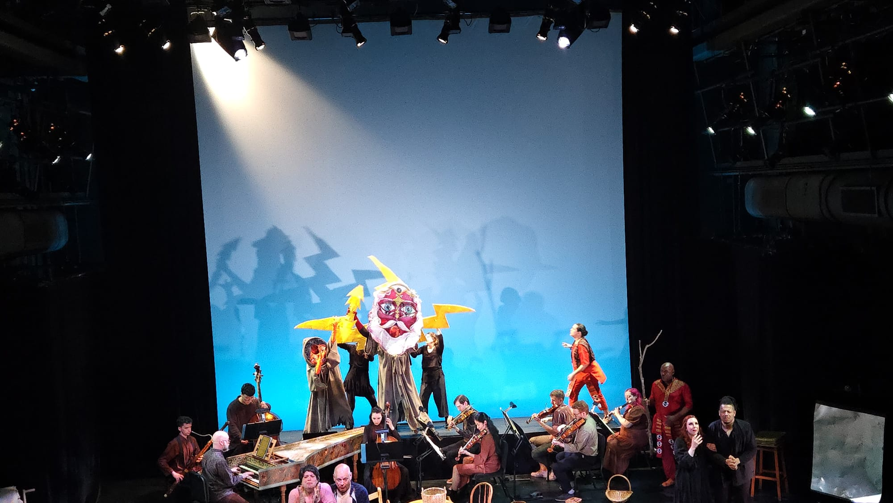

Rebecca Marchan is an 18-year-old mezzo-soprano from Queens, NY. She started on her musical journey through El Sistema-inspired orchestra programs as a violinist. She began voice lessons with her first teacher, Maria Brea, when she was 12-years-old. At present, she is a senior vocal major at LaGuardia High School, who's performed major works such as Mozart's Vesperae de Confessore, Gilbert & Sullivan's The Gondoliers, and Duruflé's Requiem as well as her first professional production, Haydn's Philemon und Baucis. She is an incoming freshman at Northwestern University for Voice Performance and Social Policy.